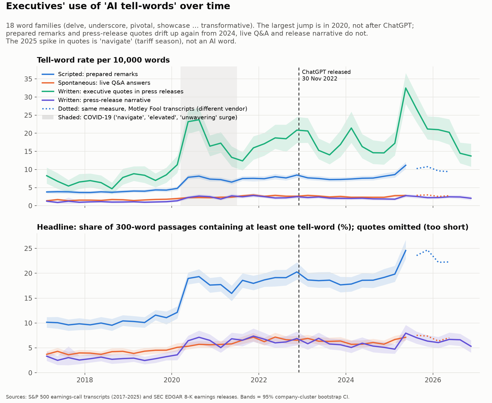
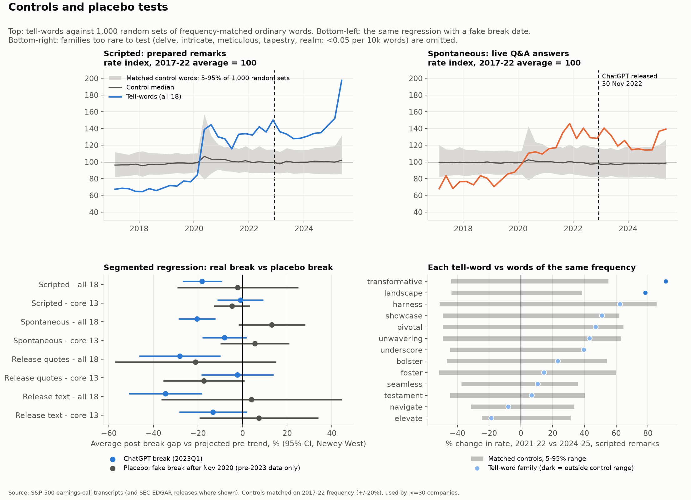
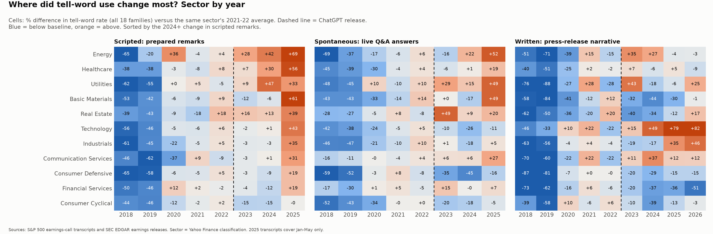
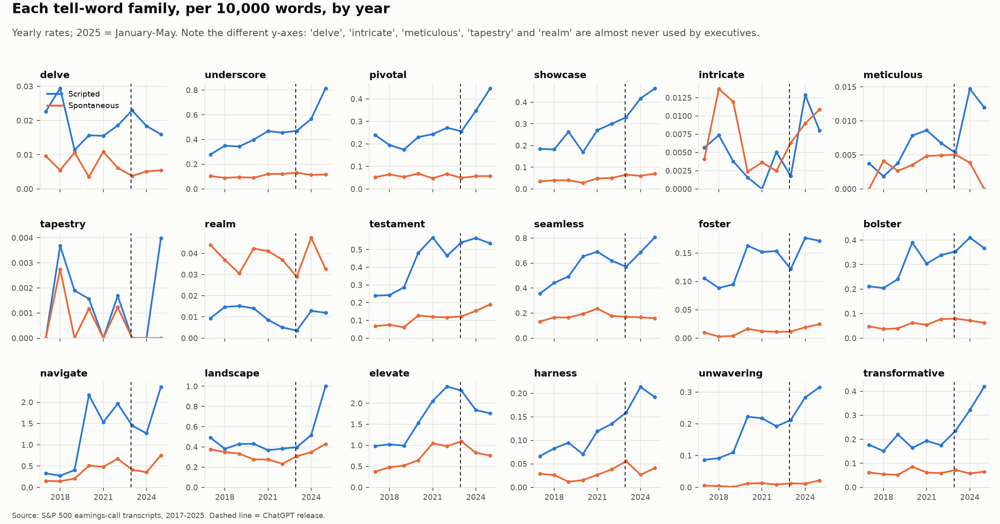
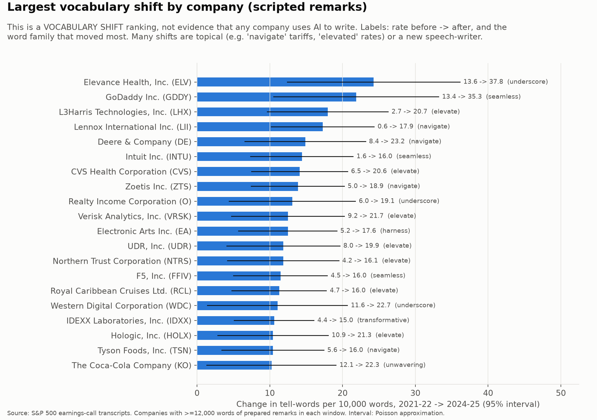

Are executives letting ChatGPT write for them?
163 million words spoken and published by S&P 500 executives, 2017 to 2026, searched for the vocabulary that gives AI writing away.
Short answer: the data cannot show it. There is no jump when ChatGPT launched. From 2024 there is a modest rise in "AI-style" words, and it shows up only in text that somebody drafts in advance (prepared remarks, quotes in press releases), not in live answers from the same executives. That is what AI-assisted drafting would look like. But the rise is small, comes from a handful of words, and is not statistically distinguishable from ordinary drift in corporate vocabulary.
The real vocabulary shock of the period was COVID-19, not ChatGPT.
1. No break at the ChatGPT date
The 18 tell-words (delve, underscore, pivotal, showcase, intricate, meticulous, tapestry, realm, testament, seamless, foster, bolster, navigate, landscape, elevate, harness, unwavering, transformative) nearly doubled in prepared remarks in 2020, when every company was "navigating" "elevated" uncertainty with "unwavering" commitment. After November 2022 the line is flat for two years. A segmented regression with a break at Q4 2022 finds the post-ChatGPT period slightly below trend, and nothing once the COVID step is allowed for (−0.3 per 10,000 words, interval −0.9 to +0.3).

2. The built-in control: scripted vs spontaneous
On an earnings call, executives read a script and then answer analysts unscripted. Removing five word families with obvious business meanings (navigate, elevate, unwavering, pivotal, landscape), prepared remarks rise 29% (+18 to +41) while live answers do not move (+4%, −10 to +20). The gap between the two widens faster after 2023 (slope change +0.10 per 10,000 words per quarter, p<0.001), with no sudden jump.

| Channel | All 18 words | Core 13 |
|---|---|---|
| Scripted: prepared remarks | +10% (+4 to +17) | +29% (+18 to +41) |
| Spontaneous: live Q&A | −6% (−14 to +2) | +4% (−10 to +20) |
| Written: executive quotes in press releases | +17% (+6 to +30) | +41% (+22 to +66) |
| Written: press-release narrative | −9% (−20 to +5) | +19% (−2 to +47) |
Change in rate per 10,000 words, 2021Q1-2022Q4 vs 2024Q1 onward, with 95% company-cluster bootstrap intervals.
3. Controls and placebo
How much does a random set of equally common words move over the same period? Quite a lot. The tell-words sit toward the top of that distribution in prepared remarks and press-release quotes but inside it (p = 0.08 and 0.11). Only transformative and landscape individually beat their matched controls. A fake break date in November 2020 produces no effect, as it should.

4. Excess vocabulary
Following Kobak et al. (2024), every word's 2024 frequency is compared with a projection from 2021-22. In biomedical abstracts that method surfaces hundreds of style words. Here the words that exploded are topics: genai, copilot, generative, hurricane Milton, the peso. Ten style words do pass the test in prepared remarks (advancements, crucial, empowers, enhance, enhancing, insights, landscape, transformative, underscoring, unlocking) against four in live answers. The paper's lower-bound estimate of AI-affected text comes out at about 2 percentage points for 2024 prepared remarks (−0.9 to +3.9), against roughly 13% for the abstracts in the original study.

5. Where it moved
CEOs, not CFOs: +19% (+11 to +28) against −4% (−14 to +7) in prepared remarks. Healthcare (+38%) and Utilities (+42%) are the only sectors clearly above zero. Company size makes no difference. Individual word families show how uneven the picture is.


6. Company vocabulary shift
This ranks how much each company's prepared remarks changed. It is a vocabulary-shift ranking, not evidence that any company uses AI to write. Many of the largest movers are driven by words with plain business meanings, a new speech-writer, or a new CEO.

Limitations
- Tell-words are not AI detectors. Most were already rising in corporate language before 2022.
- COVID makes any projected pre-trend fragile; the conclusions lean on the scripted-vs-spontaneous and control-word comparisons instead.
- The effect is small in absolute terms: about one extra tell-word in every four calls.
- Large US-listed companies only. The main transcript series ends in May 2025; press releases run to November 2026.
- Alternative explanations are not ruled out: fashion in corporate language, and AI as a topic pulling in words like "transformative" and "harness".
Data and method
Earnings-call transcripts for S&P 500 companies (Hugging Face, 17,000 calls since 2017) split into prepared remarks and live Q&A, plus 23,500 earnings press releases from SEC EDGAR. All sources are free and need no account. Boilerplate (safe-harbor statements, tables, contacts) is stripped; every document carries company, sector, size, date, speaker role and text type.
Code and data on GitHub · One-page results · Methodology and every judgement call